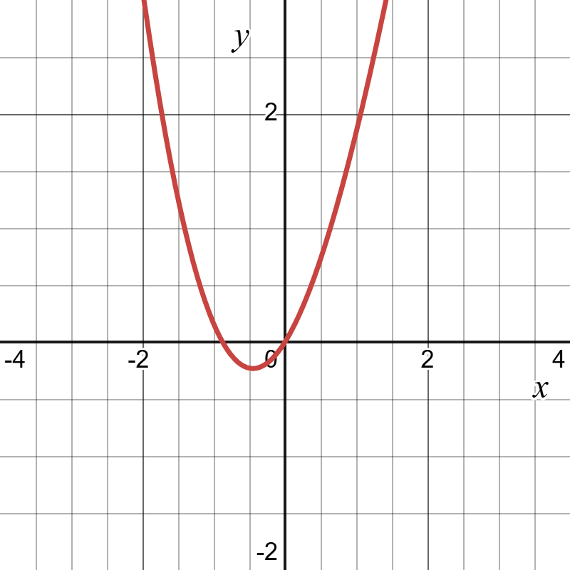
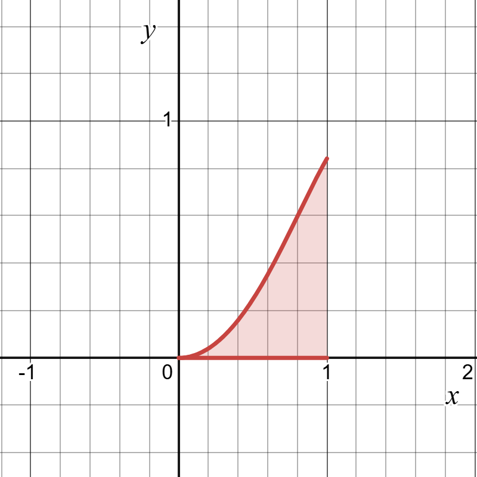
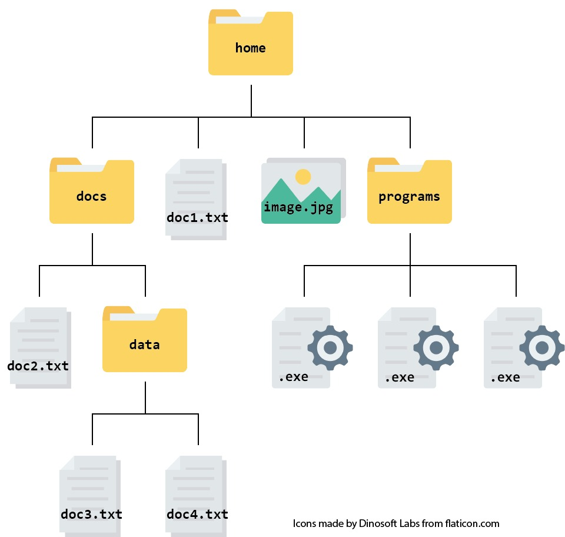
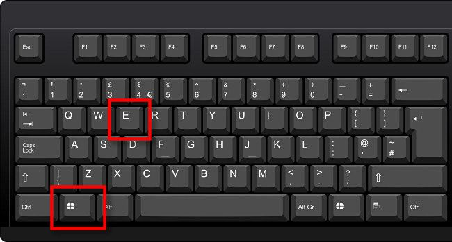
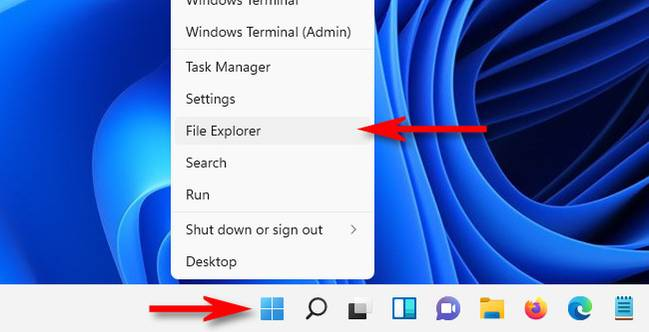
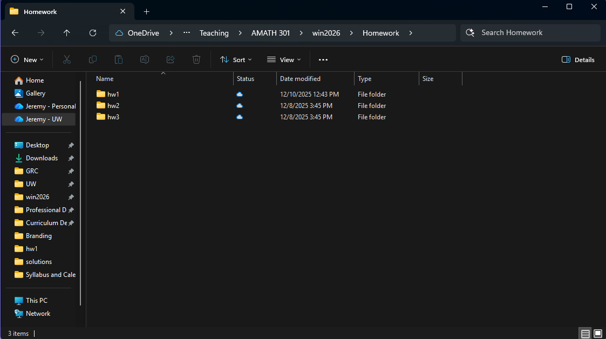

1 Getting started
These notes are a reference to use after you complete the PREP and come to class. They are not a replacement for PREP and in-class exercises. They cover the same ideas in a slightly different format, so they won’t match class exactly. The PREP for this topic: Lesson 1 PREP: Getting started with Ed and MATLAB.
Throughout this chapter, you will learn to:
- Describe scientific computing and recognize problems scientific computin solves.
- Create and maintain an organized file system for course materials.
The learning objectives are listed to help you frame your learning. If you ever find yourself asking “what are the important parts in what I am reading?” this should help you answer that question.
1.1 What is scientific computing?
You know more math than most people on Earth, but it’s still easy to write down problems you understand and can’t solve exactly. Scientific computing is how we get useful answers to them anyway.
Scientific computing is using computers to solve math, science, and engineering problems. It uses mathematics, engineering, physics, computer science, and more. We translate a math problem into a form the computer understands, and the computer does the computations.
Problems you can understand but can’t solve exactly
Find the global minimum of \(f(x) = x^2 + \sin(x)\). The minimum is where \(f'(x) = 2x + \cos(x) = 0\), but this equation can’t be solved exactly. Instead, we estimate the minimum, either with an algorithm that “rolls a marble” down the graph until it stops, or by finding the roots of \(f'(x)\) with a root-finding algorithm (sec-root-finding).

The graph of \(f(x) = x^2 + \sin(x)\). Calculate \(\displaystyle\int_0^1 \sin(x^2)\, dx\). There is no antiderivative of \(\sin(x^2)\), but we can approximate the area under the curve.

The area under \(\sin(x^2)\) from 0 to 1. Calculate \(\displaystyle\int \tan(x)\sqrt{2 + \sqrt{4 + \cos(x)}}\, dx\). This one can be solved exactly, even though it looks the most complicated. The answer is a formula in terms of symbols, which is not what we do in this class.
In scientific computing, we study the algorithms that produce approximations and determine what “close enough” means. Almost every answer we compute has some error, but the approximations are good enough to solve real problems.
Numerical vs. symbolic computing
| Symbolic computing | Numerical computing (this class) | |
|---|---|---|
| Works with | symbols (\(x\), \(y\), …), as you would on paper | numbers |
| Answers look like | formulas, e.g. \(x = \frac{-b \pm \sqrt{b^2 - 4ac}}{2a}\) | numbers, e.g. \(x = 2.718\), and plots |
| Examples | your past math classes, WolframAlpha | MATLAB |
WolframAlpha and similar tools mostly do symbolic computation. Compare what they give for the three problems above: problem 1, problem 2, problem 3.
Model error
Before computing anything, we turn a real-world problem into math, and that means making assumptions. Physicists joke about “assuming a spherical cow,” but every model does something similar: a model of a falling object might ignore air resistance, and a population model might assume the birth rate is constant from year to year. Even a perfect solution to the math still has error, because the model only approximates reality. This is called model error. It is not covered in this class.
Where scientific computing fits in
Scientific computing is one tool in the STEM toolbag, not a replacement for the rest. It fits into a cycle:
- Theory builds the model. This is where the calculus you already know and derivations from science and engineering come in.
- Scientific computing solves the model and visualizes results.
- Experts interpret those results in terms of the original science or engineering question, then change the question and repeat the cycle.
Scientific computing is used across many fields: engineers test bridge designs and simulate airflow over aircraft, scientists model disease spread and predict weather, tech companies build recommendation systems and detect fraud, and space agencies calculate spacecraft trajectories. You’ll even learn the algorithm used in the moon landing.
Data science and machine learning
- Recommendation Systems
- Netflix recommending shows, Spotify suggesting songs, Amazon products
- Using algorithms to predict what you’ll like based on patterns in massive datasets
- Image Recognition & Computer Vision
- Facial recognition; Self-driving cars identifying pedestrians, traffic signs, and obstacles
- Medical imaging: detecting tumors in X-rays and MRIs automatically
- Natural Language Processing (NLP)
- Chatbots and virtual assistants (Siri, Alexa, ChatGPT)
- Language translation (Google Translate)
- Fraud Detection
- Credit card companies analyzing millions of transactions in real-time, identifying unusual patterns that indicate fraud
Health and biology
- Drug Discovery
- Testing thousands of potential drug compounds virtually before lab testing, saving years of time and millions of dollars
- Genome Sequencing
- Analyzing DNA sequences to identify genes and mutations to understand genetic diseases
- Medical Imaging
- MRI and CT scans use computational algorithms to reconstruct 3D images
- Computer vision helps detect tumors and diagnoses
- Epidemiology
- Modeling disease spread during pandemics (like COVID-19)
- Predicting infection rates and evaluating intervention strategies
Earth and space science
- Weather Forecasting
- Computers solve complex atmospheric equations to predict weather patterns
- Involves millions of data points and calculations updated every few minutes
- Climate Modeling
- Predicting long-term climate change by simulating Earth’s atmosphere, oceans, and ice through massive simulations
- Astrophysics & Space Exploration
- Simulating galaxy formation and black hole behavior
- Calculating spacecraft trajectories (like landing rovers on Mars)
- Processing data from telescopes to discover exoplanets
Engineering
- Structural Engineering
- Testing designs of bridges, buildings, and aircraft virtually before building physical prototypes
- Example: Boeing uses simulations to test aircraft wings under different conditions
- Aerospace Engineering
- Computational fluid dynamics (CFD) to design airplane wings and rocket shapes
- Simulating airflow to optimize fuel efficiency and reduce drag
- Automotive Engineering
- Crash test simulations instead of destroying physical prototypes
- Optimizing engine performance and fuel efficiency
- Electrical & Circuit Design
- Simulating complex circuits before manufacturing chips
- Analyzing power grid stability and load distribution
- Robotics & Control Systems
- Simulating robot behavior in virtual environments
- Control algorithms for drones, autonomous vehicles, and manufacturing robots
Finance & Business
- Financial Modeling
- Predicting stock market trends and risk analysis to create investment strategies
- High-frequency trading algorithms
- Predictive Analytics
- Predicting customer behaviors and sales forecasting
- Predicting equipment failures in manufacturing before they happen
- Social Media & Content Analysis
- Analyzing trends across millions of social media posts
- Content moderation: detecting harmful content automatically
- Understanding public opinion during elections or crises
We won’t be able to study all of these, but we will learn the basic tools needed to be able to begin to understand these applications, and we will even dive deep into some of them.
1.2 Algorithms and pseudocode
Algorithms and pseudocode are introduced in Lesson 7, alongside if statements (sec-if-statements).
Before writing code for a problem, it helps to write out the steps in plain language, especially when the code has to do different things in different situations.
An algorithm is a sequence of well-defined instructions for performing a specific task, like a recipe. A classic grade-school exercise is writing out exactly how to make a peanut-butter and jelly sandwich, clearly enough that someone could follow it with no other help. In scientific computing, algorithms are usually designed to solve equations, process data, simulate physical systems, or optimize designs.
Pseudocode writes out an algorithm in plain language (not actual code), in enough detail that it can be translated into any programming language. Key words in pseudocode point to specific coding tools:
| Pseudocode word | Coding tool |
|---|---|
| IF …, otherwise … | an if statement (sec-if-statements) |
| ITERATE, REPEAT | a for loop (sec-for-loops) |
For example, here is pseudocode for checking a sensor reading against an accepted value (the tolerance check from sec-tolerance):
Algorithm: Check whether a sensor reading is acceptable.
Inputs: reading, accepted value, tolerance
Outputs: a message
Steps:
1. Calculate the difference, |reading - accepted value|.
2. IF the difference is less than the tolerance, display "Within tolerance."
Otherwise, display "Out of tolerance."Longer examples are in sec-if-statements (the quadratic formula) and sec-bisection (the bisection method).
1.3 File systems and course organization
You’ll work with a lot of files in this class: MATLAB code, datasets, study guides, and more. A misplaced file wastes time, and submitting the wrong file to the autograder costs points. This comes up all the time in AMATH 301.
A file system is a system for storing files. Your computer organizes files like a filing cabinet: main folders like Documents and Desktop are the drawers, and inside them are folders, which hold more folders or files.

Keep each assignment’s files in its own folder. Two files with the same name in one folder (like Downloads) become “temperature_data.csv” and “temperature_data (1).csv”, and you can’t tell which is which. With a folder per assignment, “hw3/temperature_data.csv” and “hw4/temperature_data.csv” never get mixed up. To load a data file like this into MATLAB, see sec-loading-data.
Recommended course folder structure
- Open your file browser.
- Windows: press Windows Key + E, or right-click Start and click “File Explorer”.
- Mac: click the Finder icon (the smiling blue face) in the dock.
- Go to your “Documents” folder (or another place you’ll remember). It’s usually on the left side of the file browser.
- Create a course folder, for example “AMATH301”. Right-click an empty space (two-finger press on most touchpads) and create a new folder. Don’t use spaces in folder or file names: MATLAB won’t run files with spaces in the filename.
- Create subfolders inside it, such as “homework”, “lectures”, and “exams”. Every file for this class goes in one of these. If a file doesn’t fit, make a new folder for it. Don’t leave class files in Downloads.
- Keep it up. For example, inside “homework”, create “hw0”, “hw1”, “hw2”, and so on.



1 Getting started – AMATH 301 Course Notes
1 Getting started – AMATH 301 Course Notes
1 Getting started – AMATH 301 Course Notes
AMATH 301 Course Notes